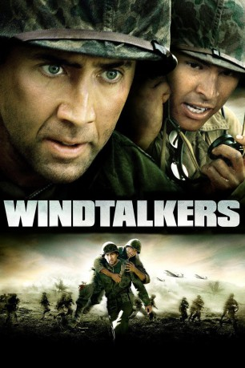
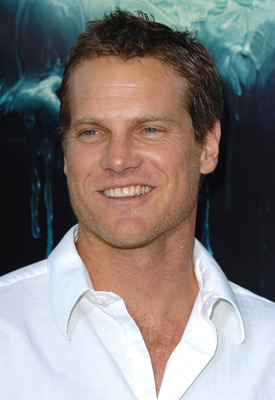
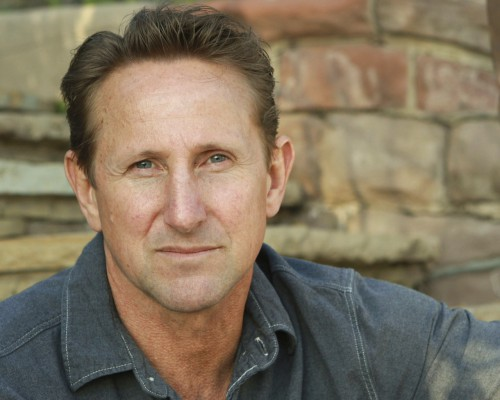

#4798 Windtalkers
 
 IMDB-Wertung: 6.0 / 10
IMDB-Wertung: 6.0 / 10  Tomatometer: 32
Tomatometer: 32  Metascore: 0
Metascore: 0 
Im Pazifikkrieg werden die Marines Joe Enders (Nicolas Cage) und „Ox“ Henderson (Christian Slater) per Geheimbefehl abgestellt, als eine Art Leibwächter f��r die Funker Ben Yahzee (Adam Beach) und Charlie Whitehorse (Roger Willie) zu fungieren. Die beiden Navajos beherrschen einen speziellen Code, der auf keinen Fall in die Hände der Feinde gelangen darf. Die erbitterten Kämpfe um die Insel Saipan schweissen die Männer zusammen. Und es ist nur eine Frage der Zeit, bis die beiden Beschützer der Code-Sprecher mit einer furchtbaren Frage konfrontiert werden: Würden sie wirklich bis zum Äussersten gehen, um den Code zu schützen?
Jahr: 2002
Dauer: 134 Minuten
FSK: 18
Land: USA Studio: MGM Distribution Co.Tonspuren: DTS - ,
Untertitel:
Auflösung: 1080p (1920x800) Größe: 9533 MB
Genre: Action, Drama, Krieg
Regisseur:  John Woo
John Woo
Drehbuch: Hans G. Raeth
Soundtrack:
Darsteller:
 Nicolas Cage als Joe Enders
Nicolas Cage als Joe Enders Adam Beach als Ben Yahzee
Adam Beach als Ben Yahzee Peter Stormare als Hjelmstad
Peter Stormare als Hjelmstad Noah Emmerich als Chick
Noah Emmerich als Chick Mark Ruffalo als Pappas
Mark Ruffalo als Pappas-  Brian Van Holt als Harrigan
 Martin Henderson als Nellie
Martin Henderson als Nellie- Roger Willie als Charlie Whitehorse
 Frances O'Connor als Rita
Frances O'Connor als Rita Christian Slater als Ox Henderson
Christian Slater als Ox Henderson Jason Isaacs als Major Mellitz
Jason Isaacs als Major Mellitz William Morts als Fortino
William Morts als Fortino Kevin Cooney als Ear Doctor
Kevin Cooney als Ear Doctor Holmes Osborne als Colonel Hollings
Holmes Osborne als Colonel Hollings Keith Campbell als Kittring
Keith Campbell als Kittring- Clayton J. Barber als Hasby
- Scott Atkinson als Camp Tarawa Staff Sergeant
- Jeremy Davidson als Marine
 James D. Dever als Field Hospital Colonel
James D. Dever als Field Hospital Colonel- Vincent Whipple als Navajo Instructor
- Chris Devlin als Code Instructor Sergeant
- Jeff Davis als Technical Sergeant
 Darrel Guilbeau als Battleship Petty Officer
Darrel Guilbeau als Battleship Petty Officer- Aaron Yamagata als Tanapag Boy
- Victoria Chen als Tanapag Mother
- Robert Aguilar Jr. als Private Povovich , uncredited
- Louis Per Bruno als U.S. Marine , uncredited
- Matty Castano als Japanese Soldier , uncredited
- Toshiro Cinemasen als Japanese Soldier , uncredited
- Timothy Di Pri als Politician , uncredited
 Paul Edney als WWII U.S. Marine , uncredited
Paul Edney als WWII U.S. Marine , uncredited- Christopher Illing als Marine , uncredited
- Keii Johnston als Marine , uncredited
- Ender Lee als Dying Japanese Soldier , uncredited
-  Denney Pierce als Marine , uncredited
 Simon Rhee als Japanese Soldier , uncredited
Simon Rhee als Japanese Soldier , uncredited- Jimmy Zerda als Camp Tarawa Marine , uncredited
- Cameron Thor als Mertens
- Brian Maynard als Corpsman
- Albert Smith als Navajo Man
- Jim Morse als Marine Recruit
- Glen Begay als Radio Codetalker
- Ross Lasi Tanoai als Eddie the Bartender
- Brian Kasai als Japanese Intelligence Officer
- Hiroshi Mori als Japanese Radio Operator
- John Takeshi Ichikawa als Japanese Bunker Commander
- Christopher T. Yamamoto als Japanese Bunker Gunner
- Marc McClellan als Marine Artillery Commander
- Steve Tanizaki als Japanese Artillery Officer
- Malcolm Dohi als Battleship Codetalker
Datei: X:\FSK18-2000-2009\Windtalkers (2002, FSK18, 1920x800).mkv seit 18.11.2016
Festplatte: FSK18
 Es gibt insgesamt 106 Filme in der Gruppe 'FSK18-2000-2009'
Es gibt insgesamt 106 Filme in der Gruppe 'FSK18-2000-2009'